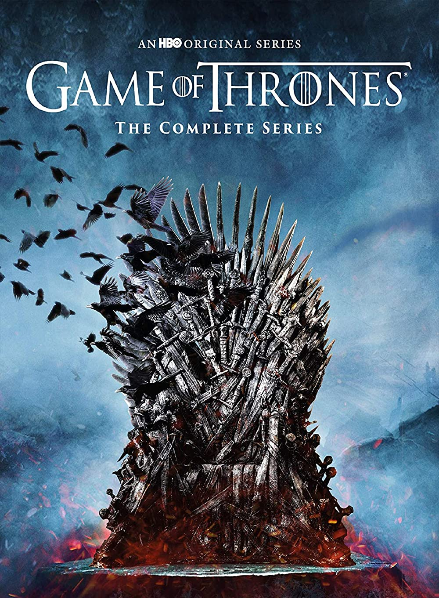

İsmail ALTAY
İletişim
-
Hobilerim
-
Sevdiğim Diziler
Hakkımda
Merhabalar ben İsmail. İzmir Yüksek Teknoloji Enstitüsü Elektronik & Haberleşme Mühendisliği 3. sınıf öğrencisiyim.
2. sınıf yazında yaptığım staj sonrasında Web-Development'a merak sarmış bulunmaktayım ve şu an front-end eğitimleri almaya başladım.
Hobilerim
- Gitar Çalmak
Uzun süre önce (şu an hatırlayamadım) maNga grubunun "Cevapsız Sorular" adlı şarkısını çalmayı hedeflemiştim.
Şu an itibariyle tüm şarkıları çalmanın dışında, çok bilindik bir Türk Rock Grubunun solistiylede birlikte çalışma aşamasına kadar geldim.
- Gitar Çalmak
Tenis oynamayı seviyorum. Çok efor gerektiren bir spor ve stres atmak için bire bir.
- E-Spor
Bilgisayar ile bu kadar uğraşan birinin oyunlardan uzak kalması saçma olurdu zaten.
CS:GO, Valorant gibi FPS oyunları hep ilgimi çekmiştir. Bu arada bu oyunlarda profesyonel açıda da başarılarım bulunmakdatır :D
Sherlock Holmes
Sherlock Holmes sahip olduğu değişik karakter ve olaylara bakış açısına hayran olduğum bir karakter. Bu dizide her bölümde yaptığı bir çok hareket ile beni şaşırtmayı başardığı için en çok sevdiğim dizilerden biridir.

Game of Thrones
Her bölümü film tadında bir dizi. Bence hikaye 6. sezona kadar kusursuz. Ancak dizinin son sezon kitaptan kopmak zorunda olması ve bunun sonucunda son sezonda çizgisini kaybetmesine neden oldu ama genede mükemmel bir 6 sezon. Her zaman TOP dizilerimden biri olacaktır.

Mr. Robot
Bilinen bir çok diziyi izledikten sonra karşılaştım Mr.Robot ile. Zaten bilgi güvenliği,hackleme mackleme konularını çok severim. Dizideki hikaye Sherlock Holmes'taki gibi insanı sürekli düşünürmeye ve merak ettirmeye yöneltiyor. Bunlardan dolayıda bu dizi gene en sevdiklerimin arasındadır.